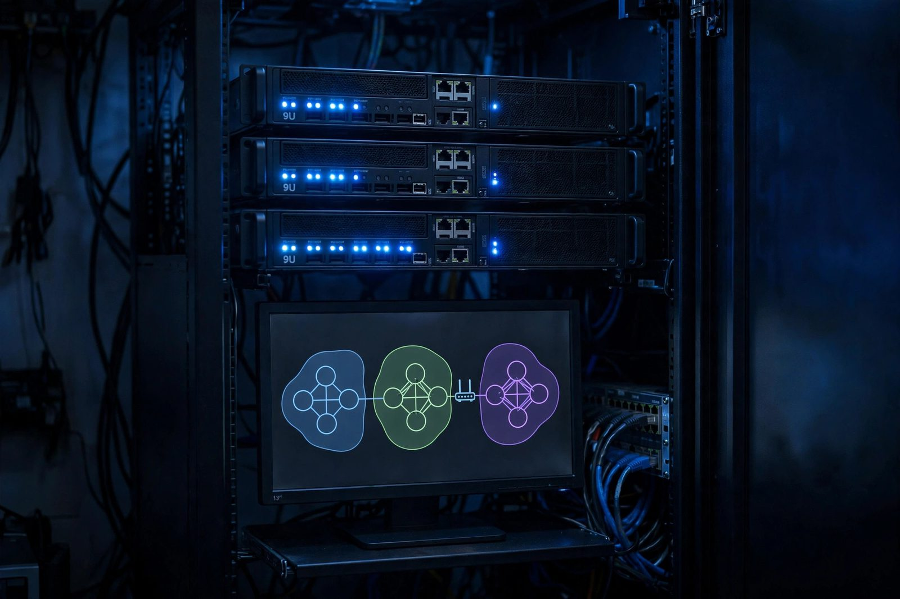

Proxmox VE Homelab: Zero-Trust Private Cloud
A 3-node Proxmox VE HA cluster with Ceph storage, VLAN segmentation, and zero-trust external access via Cloudflare Tunnel with Tailscale mesh fallback.

Overview
This private cloud keeps every self-hosted service reachable with zero open inbound ports. A 3-node Proxmox VE 8.1 cluster provides high availability over Ceph; the network is segmented into four VLANs by trust level; and the only path in from the internet is a Cloudflare Tunnel gated by Access policies, with Tailscale as an authenticated mesh fallback. No inbound ports are open on the homelab router, and tunnel traffic rides Cloudflare's edge network for low-latency global access.
This is a distinct build from the single-host Proxmox Homelab and from the 7-node Kubernetes cluster's own Proxmox underlay: these three nodes are dedicated to this HA cluster, and it is this cluster's services that the Cloudflare Tunnel publishes.
On three nodes, Ceph runs its monitors in quorum with pools at 3x replication, so any single node can fail without data loss, but there is no second failure margin and recovery is I/O heavy on consumer disks. Placement group counts were therefore tuned down from the Ceph defaults, trading slower recovery for stability, and Proxmox HA is set so guests restart on a surviving node when one fails.
Network Topology
Access policies] CF -->|cloudflared tunnel| DMZ[VLAN 40 DMZ] TS[Tailscale Mesh] -.fallback.-> MGMT subgraph Cluster["Proxmox VE HA Cluster: Ceph"] MGMT[VLAN 10 Mgmt] PROD[VLAN 20 Prod] IOT[VLAN 30 IoT] DMZ end PROD --- LXC[Docker LXC services]
Zero-Trust Access Flow
Cloudflare Access] I --> D[Device Posture
planned via WARP] D --> P{Policy} P -->|allow| Res[Service] P -->|deny| Block[403]
Implementation
Form the HA cluster
# On the first node: create the cluster
pvecm create tyf-cluster
# On the second and third nodes: join pointing at the first node's IP
pvecm add 192.168.10.10Expose a service via Cloudflare Tunnel (no open ports)
cloudflared tunnel route dns tyf-tunnel cloud.tyfsadik.orgAutomate local ZFS snapshots with sanoid
Sanoid protects the nodes' local ZFS pools (rpool). Ceph volumes are a separate scope: they need their own snapshot or backup strategy (Ceph snapshots, rbd mirroring, or vzdump to external storage), since sanoid does not see Ceph RBD images.
sanoid --configdir=/etc/sanoid --cron # hourly/daily/30-day retentionrpool/data@autosnap_2026-06-17_00:00:00_daily ... 30 kept
took 12 snapshots, pruned 3Key Results
- Removed all open inbound ports by routing every external path through Cloudflare Tunnel gated by Access policies.
- Low-latency global access via Cloudflare's edge network, with Tailscale as an authenticated mesh fallback.
- Automated local ZFS snapshots (hourly/daily) with 30-day retention via sanoid; Ceph volumes are covered by a separate snapshot strategy.
- Proxmox HA configured across the 3 nodes so guests restart on a surviving node if one fails.
How I built it
The design brief was strict: every self-hosted service reachable from anywhere, with zero public ingress. That means no open ports at all, identity-checked access at the edge, and a fallback path that stays authenticated.
- Phase 1, form the HA cluster: Joined three Proxmox VE 8.1 nodes with
pvecmand built Ceph shared storage across them for high availability. - Phase 2, segment the network: Carved the network into four VLANs by trust level: 10 for management, 20 for production, 30 for IoT, and 40 as the DMZ.
- Phase 3, close every port: Exposed services exclusively through Cloudflare Tunnel with Access policies, so the only path in from the internet is identity-gated and no inbound ports are open on the homelab router.
- Phase 4, add the mesh fallback: Configured Tailscale as an authenticated fallback so admin access survives even if the tunnel path has issues.
- Phase 5, automate data protection: Set up sanoid for automated local ZFS snapshots with hourly, daily, and 30-day retention, plus a separate snapshot strategy for Ceph volumes.
- Phase 6, deploy services: Ran the Docker-based services in LXC containers on the production VLAN behind the zero-trust front door.
What you need
| Category | Item | Notes |
|---|---|---|
| Hardware | 3 Proxmox nodes with redundant networking | Quorum needs three; Ceph wants separate fast links |
| Software | Proxmox VE 8.1, Ceph, sanoid | Clustering, distributed storage, snapshot automation |
| Software | cloudflared, Cloudflare Access | Tunnel ingress with identity policies |
| Software | Tailscale | Authenticated mesh fallback |
| Accounts | Cloudflare account with a domain | Tunnel DNS routing and Access policies |
| Skills | VLAN design and Ceph fundamentals | Placement groups, crush maps, and recovery behavior |
Challenges and lessons learned
- Ceph on three small nodes: Ceph assumes datacenter hardware and complains loudly on consumer gear. Lesson: tune placement group counts down and accept slower recovery in exchange for stability.
- Quorum sensitivity: losing one node in a three-node cluster leaves no failure margin. Lesson: monitor quorum health as a first-class alert, not an afterthought.
- Access policy UX: every new service needs its Access policy or users hit a wall. Lesson: template the policy creation alongside the tunnel route so nothing ships ungated.
What is next
- Enforce device posture checks through WARP before granting access.
- Move toward short-lived certificates for service-to-service auth.
- Build an audit logging pipeline for every access decision.
- Expand automated policy tests that verify each VLAN boundary.
Requirements & Engineering Objectives
The build was scoped before any hardware was racked. The driving requirement was a hard one: every self-hosted service reachable from anywhere, with zero public ingress. Each objective below maps to a design element documented on this page.
| Objective | Category | Design Target | Where Addressed |
|---|---|---|---|
| Services reachable from anywhere | Functional | Public hostnames served without any inbound port forward on the router | Cloudflare Tunnel (Implementation step 2) |
| No open inbound ports | Security | Router exposes zero listeners to the internet; all ingress is egress-originated | Security Design |
| Identity checked at the edge | Security | A Cloudflare Access policy gates every public hostname before traffic reaches a service | Zero-Trust Access Flow |
| Admin access survives tunnel failure | Reliability | An authenticated fallback path independent of Cloudflare | Tailscale mesh fallback |
| Tolerate a single node failure | Reliability | Ceph pools at 3x replication across 3 nodes; Proxmox HA restarts guests on a survivor | Architecture Deep-Dive |
| Point-in-time recovery | Reliability | Automated hourly/daily ZFS snapshots with 30-day retention on local pools | sanoid (Implementation step 3) |
| Contain lateral movement | Security | Four VLANs segmented by trust level with router-side firewalling between segments | Network Topology |
Constraints were stated up front and accepted, not worked around silently: exactly three nodes (quorum arithmetic leaves no second failure margin), consumer-grade disks (Ceph recovery is I/O heavy, so placement group counts were tuned down), a residential ISP uplink, and a homelab budget that rules out rented rack space or duplicate WAN links.
Architecture Deep-Dive
Two flows define the system. The first is the ingress path: a request reaches the
Cloudflare edge, passes the Access identity and policy check, and rides the tunnel that
cloudflared established outbound from the DMZ VLAN. Because the tunnel is
initiated from inside, no inbound port is ever opened. The second path is the fallback:
Tailscale forms an authenticated WireGuard mesh that reaches the management VLAN
directly, bypassing Cloudflare entirely.
identity and policy check"] end subgraph Cluster["Proxmox VE HA Cluster"] subgraph DMZv["VLAN 40 - DMZ"] CFD["cloudflared
egress-only tunnel client"] end subgraph PRODv["VLAN 20 - Prod"] SVC["Docker LXC services"] end subgraph MGMTv["VLAN 10 - Mgmt"] PVE["Proxmox UI and SSH"] end end TS["Tailscale mesh
authenticated fallback"] -.->|"WireGuard"| PVE CFD -->|"outbound tunnel only"| ACC ACC -->|"proxied allowed requests"| CFD CFD --> SVC style USER fill:#1a1a2e,stroke:#00d4ff,color:#e0e0e0 style ACC fill:#1a1a2e,stroke:#ff8800,color:#e0e0e0 style CFD fill:#1a1a2e,stroke:#ff8800,color:#e0e0e0 style SVC fill:#1a1a2e,stroke:#00ff88,color:#e0e0e0 style PVE fill:#1a1a2e,stroke:#ff4444,color:#e0e0e0 style TS fill:#1a1a2e,stroke:#aa88ff,color:#e0e0e0
Storage follows the same three-node symmetry. Every Ceph pool is configured at 3x replication: a guest write lands on a primary OSD and is replicated to an OSD on each of the other two nodes before it is acknowledged. Three monitors run one per node and hold quorum at 2-of-3, so the cluster keeps serving reads and writes with any one node down, and Proxmox HA restarts the failed node's guests on a surviving host.
Component Reference
Status labels are honest about what this repository contains. This page is documentation, so items are marked Documented unless the page itself shows verification output; work that is described but not yet built is marked Planned.
| Component | Responsibility | Technology | Dependencies | Status |
|---|---|---|---|---|
| HA cluster membership | Node quorum, cluster configuration, guest restart on failure | Proxmox VE 8.1 (pvecm, corosync) | 3 nodes, management VLAN | Documented |
| Shared storage | Replicated block storage for guest disks across all nodes | Ceph (MON, MGR, OSD; 3x replication) | Proxmox cluster, tuned PG counts | Documented |
| Zero-ingress publishing | Outbound-only tunnel carrying public traffic to services | cloudflared | Cloudflare account, tunnel DNS routes | Documented |
| Identity gate | Per-hostname authentication and authorization before any request reaches a service | Cloudflare Access | Cloudflare Tunnel, identity provider | Documented |
| Fallback access | Authenticated admin path to the management VLAN independent of Cloudflare | Tailscale (WireGuard mesh) | Tailscale account, ACLs | Documented |
| Snapshot automation | Hourly/daily local ZFS snapshots with 30-day retention on rpool | sanoid | ZFS pools on each node | Verified (sampled output shown above) |
| Network segmentation | Four trust-level VLANs (10 mgmt, 20 prod, 30 IoT, 40 DMZ) with router firewalling | 802.1Q switch config, router ACLs | Managed switch, router | Documented |
| Service workloads | Docker-based services behind the tunnel | Docker inside LXC on VLAN 20 | Proxmox cluster, Ceph storage | Documented |
| Ceph data protection | Snapshot or backup strategy for RBD volumes (outside sanoid's scope) | Ceph snapshots, rbd mirroring, or vzdump | Ceph cluster, external storage target | Planned |
| Device posture checks | Require device health signals before Access grants a request | Cloudflare WARP | Cloudflare Access | Planned |
| Access audit pipeline | Log every access decision for review | To be selected | Cloudflare Access logs | Planned |
| Policy boundary tests | Automated checks that each VLAN boundary actually blocks what it should | To be selected | VLAN segmentation | Planned |
Security Design
The design applies zero-trust principles at homelab scale: no implicit trust for any network location, identity verified on every external request, and blast radius limited by segmentation.
-
Egress-only ingress model:
cloudflaredinitiates the tunnel outbound to Cloudflare's edge. The homelab router forwards no inbound ports, so the entire public attack surface collapses to the Cloudflare edge, where Access policies authenticate and authorize before any byte reaches a service. - Per-service policy, no blanket rules: each hostname published through the tunnel gets its own Access policy; a new service is not reachable until its policy exists. This is why policy creation is templated alongside the tunnel route, so nothing ships ungated.
- Authenticated fallback: Tailscale provides a second, independent path into the management VLAN. It is a WireGuard mesh with its own identity and ACLs, so a Cloudflare outage does not become an administrative lockout, and the fallback is never an unauthenticated backdoor.
- Segmentation by trust level: management (VLAN 10), production (VLAN 20), IoT (VLAN 30), and DMZ (VLAN 40) are isolated at the switch, with the router firewalling between segments. A compromised IoT device cannot reach the Proxmox management plane.
-
Certificate and credential handling: TLS for public hostnames is
terminated at the Cloudflare edge, so no certificate private keys need to live on the
tunnel-published services. The tunnel credentials file and any API tokens are stored
only on the host that runs
cloudflared, with restrictive file permissions; commands on this page use placeholders such as<API_TOKEN>rather than real values. - Planned hardening: device posture enforcement via WARP, short-lived certificates for service-to-service authentication, and an audit pipeline over every Access decision are designed but not yet implemented (see the component reference and limitations).
Failure Modes & Recovery
Each failure mode below follows from the architecture described above. Commands are sanitized: real hostnames, tokens, and IDs are replaced with placeholders.
Cloudflare outage or tunnel down
Public hostnames stop resolving to a working path, but nothing inside the cluster is affected. Administration continues over the Tailscale fallback, which never touches Cloudflare. Recovery on the DMZ host:
# Is the tunnel client alive?
systemctl status cloudflared
# Which tunnels does this account know about, and is this one connected?
cloudflared tunnel list
cloudflared tunnel info <TUNNEL_NAME>
# Restart the client if it has wedged; it re-dials outbound, no ports to open
systemctl restart cloudflaredSingle node failure
Ceph monitors hold quorum at 2-of-3, so the surviving two nodes keep the cluster read-write. OSDs on the failed node go down; Ceph marks the pool degraded and begins re-replicating data onto the surviving OSDs. Proxmox HA restarts the failed node's guests on a surviving host. This is the case the design explicitly tolerates; recovery is I/O heavy on consumer disks, which is why PG counts were tuned down for stability over speed.
# Cluster and storage health from any surviving node
pvecm status
ceph -s
ceph osd treeSecond node failure before the first recovers
With only one node left, corosync and the Ceph monitors lose quorum: the cluster goes read-only and guests stop rather than risk split-brain. This is the accepted limit of a three-node design. After hardware is repaired, rejoining the node lets Ceph backfill and rebalance automatically. If the failed node cannot return, quorum can be temporarily adjusted as a deliberate, documented break-glass step:
# Break-glass only: run the cluster on one node while rebuilding
pvecm expected 1ZFS snapshot rollback on a local pool
sanoid keeps hourly and daily snapshots for 30 days on each node's rpool. Rolling back discards everything written after the snapshot, so it is a deliberate operation:
# List what sanoid has kept
zfs list -t snapshot -r rpool/data
# Roll back to a known-good snapshot (destroys later snapshots of that dataset)
zfs rollback rpool/data@autosnap_<DATE>_daily
# Confirm sanoid itself is still creating and pruning on schedule
systemctl status sanoid.timerCeph RBD data
sanoid does not see Ceph RBD images, so guest disks on Ceph need the separate strategy noted in the component reference (Ceph snapshots, rbd mirroring, or vzdump to external storage). Until that is built, a Ceph pool loss has no point-in-time recovery; this is listed as a limitation below.
Troubleshooting Matrix
| Symptom | Possible Cause | Diagnostic | Safe Remediation |
|---|---|---|---|
| Public hostname returns 502/503 or times out | cloudflared not running, tunnel route missing, or origin service down | systemctl status cloudflared; cloudflared tunnel list; curl the service locally on VLAN 20 |
Restart cloudflared; re-add the DNS route with cloudflared tunnel route dns <TUNNEL_NAME> <hostname>; restart the LXC service if the tunnel is healthy |
| Users hit an Access deny page on a new service | Hostname published without a matching Access policy | Check the Access application list for the hostname in the Cloudflare dashboard | Create the Access policy from the template used at tunnel-route time; never publish a route without its policy |
ceph -s shows HEALTH_WARN, degraded PGs |
Node or OSD down; re-replication in progress after a failure | ceph osd tree; ceph health detail; pvecm status |
Let backfill finish if a node just returned; if an OSD is permanently gone, replace it and let Ceph rebalance; avoid restarts during recovery |
| Cluster commands hang; guests stopped unexpectedly | Quorum lost (two nodes down or corosync partition) | pvecm status on each reachable node; check management VLAN connectivity |
Restore node connectivity first; use pvecm expected 1 only as a documented break-glass step while rebuilding |
| Snapshots missing or retention drifting | sanoid timer failed, pool full, or config error | systemctl status sanoid.timer; zfs list -t snapshot -r rpool; zpool list for capacity |
Fix the config and restart the timer; free pool space above 80% usage; run sanoid once manually to confirm snapshots are taken and pruned |
| Tailscale fallback unreachable | Node's tailscaled down, ACL change, or expired node key | tailscale status and tailscale ping <node> from an admin device |
Restart tailscaled on the node; re-authenticate the node key; review recent ACL changes before reverting anything |
| Guests do not restart after a node failure | HA resources not configured for the guest, or surviving node lacks capacity | Check the HA resource list in Proxmox; review the HA manager log on a surviving node | Add the guest as an HA resource; keep enough headroom on each node to absorb one node's guests |
Limitations & Future Work
- No second failure margin: three nodes means quorum at 2-of-3 and Ceph at 3x replication. One failure is tolerated by design; a second concurrent failure stops the cluster. This is accepted, monitored, and documented rather than hidden.
- Consumer disks bound Ceph recovery: re-replication after a node loss is slow and I/O heavy. PG counts are tuned down for stability, which trades away recovery speed.
- Ceph RBD has no point-in-time recovery yet: sanoid covers only local ZFS pools. The separate snapshot or backup strategy for Ceph volumes (Ceph snapshots, rbd mirroring, or vzdump to external storage) is planned, not built.
- Cloudflare is a dependency: public access depends on the tunnel and Access. The Tailscale fallback covers administration, but it does not restore public service reachability during a Cloudflare outage.
- Single residential uplink: one ISP, one router. The zero-trust design removes the need for inbound ports, but it cannot remove the physical single point of failure.
- Posture, audit, and policy testing are unfinished: WARP device posture, an access-decision audit pipeline, short-lived service certificates, and automated VLAN boundary tests are the active next steps listed above.
References
- Proxmox VE Cluster Manager (pvecm) documentation
- Proxmox VE High Availability documentation
- Proxmox VE hyper-converged Ceph cluster guide
- Ceph official documentation (replication, placement groups, monitors and quorum)
- Cloudflare Tunnel (cloudflared) documentation
- Cloudflare Access policies documentation
- Tailscale knowledge base (mesh networking and ACLs)
- OpenZFS documentation (snapshots and rollback)
- sanoid (ZFS snapshot automation and retention policy)